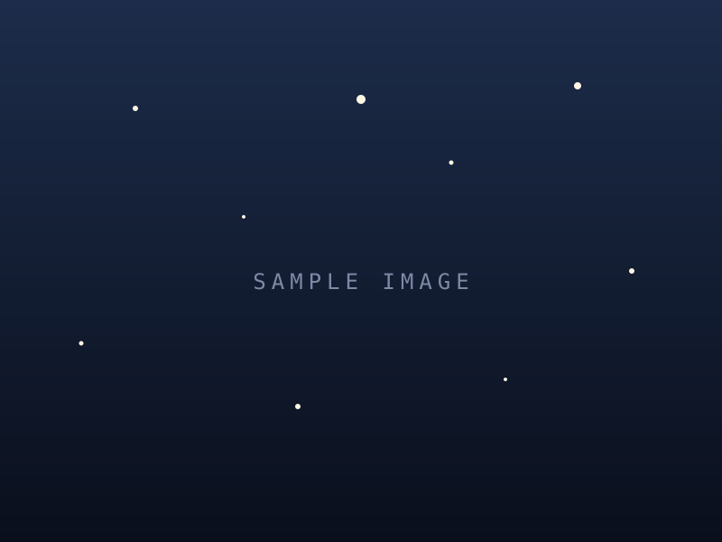

Every primitive and variant in comic.css, rendered live. Each label is the exact class recipe — type it in working.html, or select an element in the editor and cast it. ← back to editor
Image containers, positioned by inline % on the page. object-fit: cover — frame aspect = image aspect means no crop.
.frame
.frame.card.frame.card.horizontal.frame.card.polaroid · --rot.frame.card.clipping · --accent.frame.matted · --mat.frame.stroked.frame.cropped (img zoom/pan).frame.embedEditable text. On a real page each carries a position class (below). .hl is an inline gold emphasis span.
.prim.caption.prim.label.prim.quote.prim.quote.boxed.prim.quote.typewriter.prim.speech.prim.thought.prim.title.prim.title.gold.prim.title.sub.prim.title.typewriter.prim.punch.hl (inline)Any text prim takes one position class to anchor it within (or below) its frame.
.top-left / .top-center / .top-right · .bottom-* · .middle-center · .below-frame
Full-width structural blocks (titles, narration, stat rows, headers/footers).
.chapter-title (on .page.dark).page-text.page-text.lead.page-text.framed.cards-head.cards-foot.stat-trioWhole-page starting points you'll drop in from the editor, then fill. A growable library.
2-frame3-frame2×2 gridfull-bleed9:16 vertical